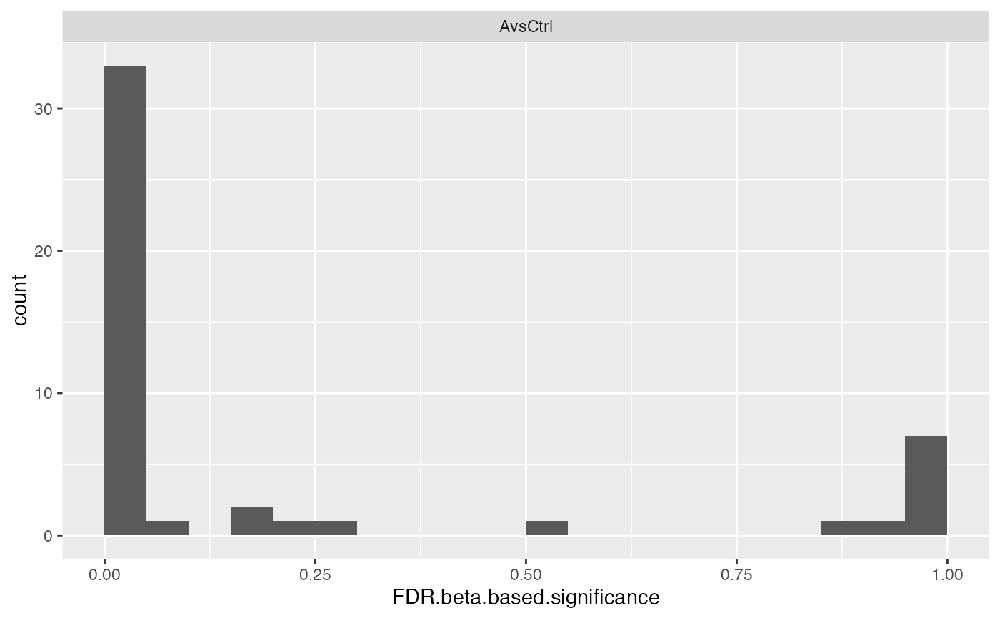

ROPECA reproducibility-optimization method
ROPECA reproducibility-optimization method
Details
ROPECA optimizes the reproducibility of statistical testing on peptide-level and aggregates the peptide-level changes to determine differential protein-level expression.
See also
summary_ROPECA_median_p.scaled
Other modelling:
ContrastsModerated,
ContrastsSimpleImpute,
Contrasts_Plotter,
Contrasts,
INTERNAL_FUNCTIONS_BY_FAMILY,
LR_test(),
Model,
addContrastResults(),
build_model(),
get_complete_model_fit(),
get_imputed_contrasts(),
get_model_coefficients(),
get_p_values_pbeta(),
isSingular_lm(),
linfct_all_possible_contrasts(),
linfct_factors_contrasts(),
linfct_from_model(),
linfct_matrix_contrasts(),
model_analyse(),
moderated_p_limma_long(),
moderated_p_limma(),
ms_brms_model(),
ms_mcmc_checkzero(),
ms_mcmc_constrast(),
my_contest(),
my_contrast_V1(),
my_contrast_V2(),
my_contrast(),
my_glht(),
pivot_model_contrasts_2_Wide(),
plot_lmer_model_and_data_TWO(),
plot_lmer_model_and_data(),
plot_lmer_peptide_noRandom_TWO(),
plot_lmer_peptide_noRandom(),
plot_lmer_peptide_predictions(),
plot_lmer_predicted_interactions(),
strategy_glm(),
strategy_lmer(),
strategy_lm(),
summary_ROPECA_median_p.scaled()
Methods
Public methods
Method new()
Usage
ContrastsROPECA$new( Contrast, modelName = "ROPECA", p.adjust = prolfqua::adjust_p_values )
Method get_linfct()
Usage
ContrastsROPECA$get_linfct()
Method get_contrasts()
get contrasts
Usage
ContrastsROPECA$get_contrasts(all = FALSE)
Arguments
allshould all columns be returned (default FALSE)
globaluse a global linear function (determined by get_linfct)
Method get_Plotter()
get Contrast_Plotter
Usage
ContrastsROPECA$get_Plotter()
Method to_wide()
convert to wide format
Usage
ContrastsROPECA$to_wide( columns = c("beta.based.significance", "FDR.beta.based.significance") )
Arguments
columnsvalue column default beta.based.significance
Method write()
write results
Usage
ContrastsROPECA$write(path, format = "xlsx")
Arguments
pathdirectory
formatdefault xlsx
lfq_write_table
Method clone()
The objects of this class are cloneable with this method.
Usage
ContrastsROPECA$clone(deep = FALSE)
Arguments
deepWhether to make a deep clone.
Examples
istar <- prolfqua::data_ionstar$normalized() istar_data <- dplyr::filter(istar$data ,protein_Id %in% sample(protein_Id, 100)) modelFunction <- strategy_lm("transformedIntensity ~ dilution.") pepIntensity <- istar_data config <- istar$config$clone(deep = TRUE) config$table$hierarchyDepth <- 2 config$table$hkeysDepth()#> [1] "protein_Id" "peptide_Id"#> Warning: WARN :Error in `contrasts<-`(`*tmp*`, value = contr.funs[1 + isOF[nn]]): contrasts can be applied only to factors with 2 or more levels#> Warning: WARN :Error in `contrasts<-`(`*tmp*`, value = contr.funs[1 + isOF[nn]]): contrasts can be applied only to factors with 2 or more levels#> Warning: WARN :Error in `contrasts<-`(`*tmp*`, value = contr.funs[1 + isOF[nn]]): contrasts can be applied only to factors with 2 or more levels#> Warning: WARN :Error in `contrasts<-`(`*tmp*`, value = contr.funs[1 + isOF[nn]]): contrasts can be applied only to factors with 2 or more levels#> Warning: WARN :Error in `contrasts<-`(`*tmp*`, value = contr.funs[1 + isOF[nn]]): contrasts can be applied only to factors with 2 or more levels#> Warning: WARN :Error in `contrasts<-`(`*tmp*`, value = contr.funs[1 + isOF[nn]]): contrasts can be applied only to factors with 2 or more levels#>Contr <- c("dil.b_vs_a" = "dilution.a - dilution.b") contr <- prolfqua::Contrasts$new(mod, Contr) dim(contr$get_contrasts())#>#>#>#>#> [1] 774 16#> [1] 774 16#ContrastsROPECA$debug("get_contrasts") contrast <- prolfqua::ContrastsROPECA$new(contrM) contrast$get_contrasts()#> # A tibble: 54 x 12 #> # Groups: contrast [1] #> modelName protein_Id contrast n estimate statistic c1_name c1 c2_name #> <chr> <chr> <chr> <int> <dbl> <dbl> <chr> <dbl> <chr> #> 1 ROPECA CON__P027~ dil.b_v~ 33 -8.81e-4 -0.00401 diluti~ 3.43 diluti~ #> 2 ROPECA CON__P349~ dil.b_v~ 13 1.16e-2 0.110 diluti~ 2.78 diluti~ #> 3 ROPECA sp|O15511~ dil.b_v~ 4 5.30e-2 0.414 diluti~ 0.893 diluti~ #> 4 ROPECA sp|O43660~ dil.b_v~ 7 -1.51e-2 -0.0472 diluti~ -1.03 diluti~ #> 5 ROPECA sp|O95373~ dil.b_v~ 26 -2.20e-2 -0.124 diluti~ 1.07 diluti~ #> 6 ROPECA sp|P00505~ dil.b_v~ 12 5.25e-2 0.202 diluti~ 0.746 diluti~ #> 7 ROPECA sp|P01889~ dil.b_v~ 8 -1.36e-1 -0.737 diluti~ 0.239 diluti~ #> 8 ROPECA sp|P02924~ dil.b_v~ 6 -7.36e-1 -3.79 diluti~ -1.78 diluti~ #> 9 ROPECA sp|P07951~ dil.b_v~ 21 -1.07e-2 -0.112 diluti~ 0.760 diluti~ #> 10 ROPECA sp|P08238~ dil.b_v~ 41 -1.17e-2 -0.120 diluti~ 4.34 diluti~ #> # ... with 44 more rows, and 3 more variables: c2 <dbl>, #> # beta.based.significance <dbl>, FDR.beta.based.significance <dbl>#> [1] 54 12pl <- contrast$get_Plotter() pl$histogram()pl$ma_plot()